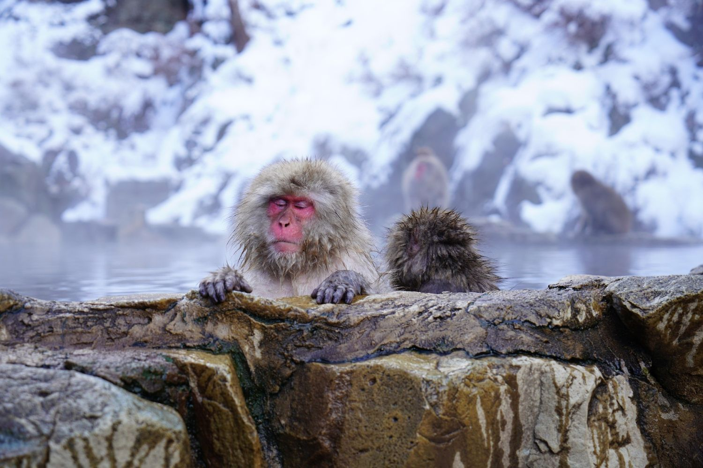
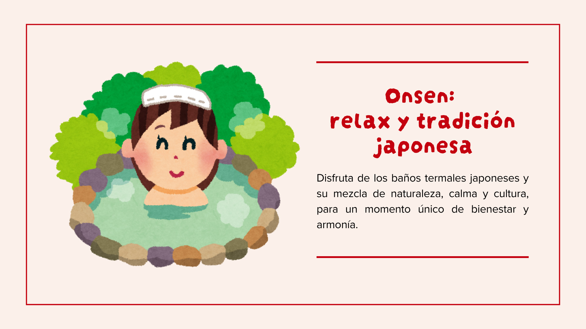

La experiencia de los onsen
Los onsen son baños termales naturales que forman parte de la tradición japonesa desde hace siglos. Relajarse en un onsen no es solo un placer físico, sino también una experiencia cultural y espiritual: el calor del agua, la tranquilidad del entorno y la naturaleza que los rodea crean un ambiente de paz y armonía.
Entre los onsen más conocidos están:
- Noboribetsu (Hokkaido): rodeado de bosques y montañas, con aguas ricas en minerales.
- Hakone (cerca de Tokio): vistas al Monte Fuji y una amplia oferta de resorts tradicionales.
- Beppu y Kinosaki (Kyushu): pequeños pueblos con numerosos baños públicos donde descubrir la hospitalidad local.
Visitar un onsen es también una oportunidad para sumergirse en la etiqueta japonesa, desde la limpieza previa hasta el respeto por el silencio y la calma.
Después de la inmersión, tu cuerpo y mente se sienten renovados, y el espíritu se conecta con la serenidad de Japón.